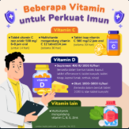
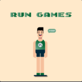
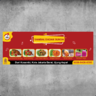
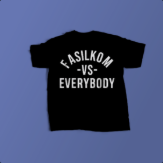
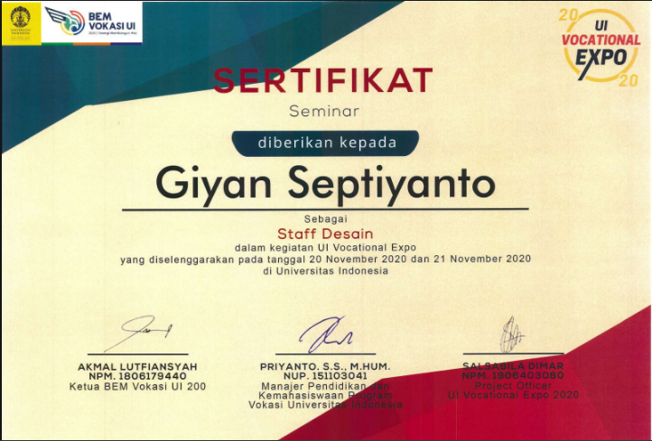

Good morning, Giyan
FOCUS SESSION
25:00
Life Dashboard
Web ApplicationDashboard produktivitas dengan to-do list, focus timer, quick links, jam, tanggal, dan dark mode.
Lihat proyekAdministrative · Operational · Digital Generalist
Saya Giyan. Saya menggabungkan kemampuan administrasi, operasional, dan digital untuk membantu pekerjaan berjalan lebih rapi—mulai dari pengelolaan data hingga website dan konten.
Terbuka untuk peluang kerja dan kolaborasi.
4
Proyek pilihan
Lintas bidang
Pengalaman kerja
Multi-disciplinary
Admin · Operations · Digital
Selected work
Gabungan proyek digital, website, dan pengalaman menjalankan operasional bisnis online.
25:00
Dashboard produktivitas dengan to-do list, focus timer, quick links, jam, tanggal, dan dark mode.
Lihat proyekCustom
3D Print.
Website bisnis untuk menampilkan produk 3D print personalisasi, contoh hasil karya, dan alur pemesanan via WhatsApp.
Lihat proyekSelected
works.
Website portfolio profesional yang merangkum profil, karya, pengalaman, pendidikan, dan kontak.
Lihat proyekPengalaman mengelola toko Tokopedia, memproses pesanan dan transaksi produk digital, serta melayani pelanggan.
Kunjungi tokoVisual pada kartu adalah ilustrasi konsep, bukan tangkapan layar asli dari website proyek.
Professional journey
Perjalanan lintas administrasi, multimedia, desain, operasional, dan dukungan digital.
Aug 2026 — Now
Freelance — Digital & Operational Support
Dokumentasi training, pemeliharaan website, dukungan Zoom, serta aset visual dan digital.
Nov 2024 — Aug 2026
Multimedia, Administrative & Operational Support
Peliputan, editing video, publikasi digital, dokumen administrasi, dan dukungan operasional.
Jun 2024 — Oct 2024
UI/UX Designer
Membuat wireframe dan mockup serta mendukung implementasi desain website responsif.
Apr 2023 — Now
E-commerce Administrator
Operasional toko online, pemrosesan pesanan dan transaksi, serta layanan pelanggan.
Jun 2021 — Sep 2021
Staf Sumber Daya Manusia dan Umum — Internship
Membuat laporan absensi karyawan, menginput penilaian karyawan ke sistem, serta mendukung administrasi dan operasional kantor.
Dec 2018 — May 2024
Graphic Design Operator
Desain materi promosi, konsultasi pra-cetak, dan koordinasi proses produksi cetak.
Galeri visual
Pilihan karya desain saya mencakup materi edukasi dan promosi, ilustrasi, hingga desain apparel.

Saya membuat poster edukasi tentang vitamin dan imunitas ini sebagai salah satu karya dalam proses sertifikasi BNSP Junior Graphic Designer.

Eksplorasi pixel art bertema RUN GAMES dengan karakter bergaya retro untuk visual aset digital.

Banner promosi kuliner yang memadukan foto menu, identitas brand, dan informasi pemesanan dalam format horizontal.

Desain grafis kaos dengan kontras hitam-putih dan tipografi tegas, mengangkat identitas FASILKOM.
Skills in action
Kombinasi keterampilan yang bisa dipakai untuk mendukung pekerjaan nyata lintas fungsi.
Pengelolaan dokumen, input data, pencatatan, dan laporan.
Microsoft Word · Excel · PowerPoint
Koordinasi, dokumentasi kegiatan, komunikasi, dan dukungan proses kerja.
Coordination · Documentation
Pemeliharaan website, desain UI/UX, serta pengembangan halaman web.
HTML · CSS · Tailwind CSS
Konten visual, editing video, materi promosi, dan publikasi digital.
Illustrator · InDesign · Premiere · Canva
Software · Tools · Frameworks
Dari desain visual dan editing, sampai coding, dokumentasi, dan kolaborasi. Daftar ini mencakup tools yang pernah saya gunakan dalam pekerjaan atau proyek, bukan peringkat tingkat keahlian.
Organizational experience
Pengalaman organisasi kampus yang melengkapi pengalaman profesional, terutama dalam koordinasi, komunikasi, dan desain.
September 2020 – Februari 2021
Koordinator Komunikasi dan Informasi
Mendukung koordinasi komunikasi dan penyampaian informasi dalam kegiatan organisasi fakultas.
20–21 November 2020
Staf Desain
Berperan sebagai staf desain dalam penyelenggaraan UI Vocational Expo 2020 di Universitas Indonesia.

Sertifikat kepanitiaanLihat dokumenOktober 2019 – Februari 2020
Staf Divisi Minat dan Bakat
Menjadi bagian dari Divisi Minat dan Bakat di Himpunan Mahasiswa Sistem Informasi.
Education
Latar akademik yang menjadi dasar pemahaman saya terhadap sistem, data, proses, dan teknologi digital.
2018–2022
Gelar sarjanaS1 Sistem Informasi · IPK 3,6/4,0
Pendidikan di bidang Sistem Informasi yang mendukung pemahaman terhadap proses kerja, data, sistem, dan teknologi.
Certifications & learning
Sertifikasi kompetensi dan proyek pembelajaran yang relevan dengan kemampuan desain dan digital.
Sertifikasi kompetensi di bidang desain grafis. Poster kesehatan di galeri menjadi contoh karya desain terkait.
Lihat karya terkaitLife Dashboard saya kembangkan sebagai proyek pembelajaran untuk memperoleh sertifikat RevoU. Tautan ini membuka versi proyek yang sudah dipublikasikan.
Lihat proyek Life DashboardTautan di atas membuka karya pendukung atau proyek terkait. Tautan sertifikat resmi dapat ditambahkan jika dokumen atau URL verifikasinya tersedia.
Project notes · Ideas · Process
Catatan singkat mengenai keputusan desain, pengalaman membangun website, dan pembelajaran dari proyek nyata.
Dashboard produktivitas harus membuat informasi penting lebih mudah dijangkau, bukan menambah distraksi.
Life Dashboard menggabungkan to-do list, focus timer, quick links, serta informasi waktu dalam satu tempat. Tantangannya bukan menambah sebanyak mungkin fitur, melainkan menjaga tiap elemen tetap mudah dipahami. Setiap fitur idealnya membantu pengguna mengambil tindakan tanpa harus berpindah terlalu banyak halaman.
Pengunjung perlu cepat memahami produk, melihat contohnya, dan tahu cara melakukan pemesanan.
Website bisnis perlu menjawab beberapa pertanyaan penting: produk apa yang ditawarkan, seperti apa hasilnya, dan bagaimana cara memesan? Pada GYEP 3D Print, katalog, contoh produk, FAQ, serta jalur pemesanan WhatsApp mendukung kebutuhan itu. Alur yang jelas membantu pengunjung menemukan informasi dan tindakan yang dibutuhkan.
Poster edukasi, banner promosi, dan desain kaos punya tujuan berbeda, jadi pendekatan visualnya juga perlu berbeda.
Sebuah desain tidak hanya dinilai dari tampilannya, tetapi juga dari fungsi dan konteksnya. Poster edukasi perlu membantu informasi terbaca; banner promosi perlu menonjolkan produk dan informasi pemesanan; desain kaos perlu menyampaikan identitas visual. Hierarki dan format desain sebaiknya mengikuti tujuan materi.
A little about me
Latar belakang Sistem Informasi membiasakan saya menghubungkan proses, data, desain, dan teknologi. Saya senang menata proses kerja sekaligus mengembangkan ide digital menjadi solusi yang dapat digunakan.
Terbiasa menangani kebutuhan yang beragam tanpa kehilangan fokus pada detail dan hasil.
Memadukan tools digital, dokumentasi, dan kreativitas untuk menyelesaikan pekerjaan.
Let's connect
Hubungi saya untuk membahas peluang kerja, kolaborasi, atau proyek di bidang digital dan operasional.